%matplotlib inline
import matplotlib.pyplot as plt
import numpy as np第四讲：机器学习基础
1.基础框架
相关概念梳理
- artificial intelligence：The set of all tasks in which a computer can make decisions
- machine learning：The set of all tasks in which a computer can make decisions based on data
- deep learning：The field of machine learning that uses certain objects called neural networks

人类思考的两种方式:
- By using logic and reasoning
- By using our experience
以垃圾邮件为例，思考如何进行自动决策？


数据存在不同的形式

三种机器学习类型
- Supervised learning
- Unsupervised learning
- reinforcement learning

有监督学习相关概念
- 输入(input)：输入给计算机的信息，通常我们用X表示，上例的输入就是一张图片
- 目标(target)：人工专家定义的标注，通常用Y表示，上例中每张图片都会有一个标注，注明是猫或是狗，这种标注通常会转换成0-1表示。
- 预测(predict)：计算机需要判断预测的结果，上例的预测输出就是预测图片的类别或是预测的概率值。
- 模型(model)：计算机从输入到预测的判断逻辑，模型也可以认为是一种函数，函数输入，输出预测。最简单的函数就是一条直线，函数是有参数的，例如直线的斜率。
- 损失(loss)：如果人类专家的标注和模型的预测不一致，就认为模型还不够好，需要一种量化方法来计算这种不够好的程度，这种量化计算的结果称为损失，例如直接将标注值减去预测值。
- 优化(optimize)：一个良好的模型需要有较小的损失，所以机器学习问题也可以看成是一个最优化的问题，优化的目标是损失，可以调整的是模型的参数。
2. 线性回归算法实现
X = np.array([0.1, 0.2, 0.3,
0.4, 0.5, 0.6,
0.7, 0.8, 0.9, 1]).reshape(-1,1)
y = np.array([0.05,0.08,0.1,
0.09,0.13,0.14,
0.17,0.21,0.28,0.27]).reshape(-1,1)plt.scatter(X,y)<matplotlib.collections.PathCollection at 0x29d8e3d6c20>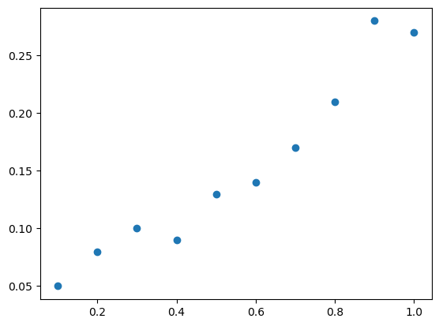
from sklearn.linear_model import LinearRegressionslr = LinearRegression()
slr.fit(X, y)
predict_y = slr.predict(X)
print('slope:',slr.coef_[0])
print('Intercept: %.3f' % slr.intercept_)slope: [0.25333333]
Intercept: 0.013y_predict = slr.predict(X)
# plot results
plt.scatter(X, y, label='training points')
plt.plot(X, y_predict, label='linear fit', linestyle='--')
plt.show()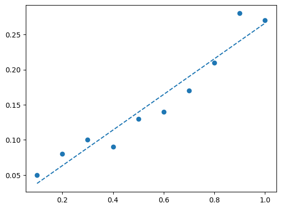
mse = np.mean((y-y_predict)**2)
print("MSE=",mse)MSE= 0.00038133333333333346from sklearn.metrics import mean_squared_error
print('MSE train: %.6f' %mean_squared_error(y, predict_y))MSE train: 0.000381线性回归算法逻辑：
Inputs: 一组数据点
Outputs: 一条最接近数据点的线
Procedure: - 先随机生成一条线. - 不断调整这条线，让它去接近数据点
伪代码：
1.先给W一个随机的赋值
2.计算给定W下的模型预测值
3.计算模型预测值和真实目标值之间的差距，我们叫做损失函数，在线性回归这里就是算的MSE
4.根据损失函数来对W求导，根据梯度下降算法来修正W
每次迭代权重向量以如下方式修正更新： \[ w:= w + eta * (y-f(x))*x\]
具体实现代码如下：
class LinearRegressionGD:
def __init__(self, eta=0.1, n_iter=20):
self.eta = eta # learning rate 学习率
self.n_iter = n_iter # 迭代次数
def fit(self, X, y): # 训练函数
self.coef_ = np.zeros(shape=(1, X.shape[1])) # 要训练的参数w，初始化为 0
self.intercept_ = np.zeros(1)
self.cost_ = [] # 用于保存损失
for i in range(self.n_iter):
output = self.net_input(X) # 计算预测的Y
errors = y - output
self.coef_ += self.eta * np.dot(errors.T, X) # 根据更新规则更新系数
self.intercept_ += self.eta * errors.sum() # 更新 bias，相当于x取常数1
cost = (errors**2).sum() / 2.0 # 计算损失
self.cost_.append(cost) # 记录损失函数的值
return self
def net_input(self, X): # 给定系数和X计算预测的Y
output = np.dot(X, self.coef_.T) + self.intercept_
return output
def predict(self, X):
return self.net_input(X)slr = LinearRegressionGD(eta=0.1, n_iter=20)
slr.fit(X, y); # 喂入数据进行训练# cost function
plt.plot(range(1, slr.n_iter+1), slr.cost_)
plt.ylabel('SSE')
plt.xlabel('Epoch')
plt.tight_layout()
真实数据案例
# 读取数据
import pandas as pd
df = pd.read_csv('../data/Hyderabad.csv')
df.head()| Price | Area | Location | No. of Bedrooms | Resale | MaintenanceStaff | Gymnasium | SwimmingPool | LandscapedGardens | JoggingTrack | ... | LiftAvailable | BED | VaastuCompliant | Microwave | GolfCourse | TV | DiningTable | Sofa | Wardrobe | Refrigerator | |
|---|---|---|---|---|---|---|---|---|---|---|---|---|---|---|---|---|---|---|---|---|---|
| 0 | 6968000 | 1340 | Nizampet | 2 | 0 | 0 | 1 | 1 | 1 | 1 | ... | 1 | 0 | 1 | 0 | 0 | 0 | 0 | 0 | 0 | 0 |
| 1 | 29000000 | 3498 | Hitech City | 4 | 0 | 0 | 1 | 1 | 1 | 1 | ... | 1 | 0 | 1 | 0 | 0 | 0 | 0 | 0 | 0 | 0 |
| 2 | 6590000 | 1318 | Manikonda | 2 | 0 | 0 | 1 | 0 | 0 | 0 | ... | 0 | 0 | 0 | 0 | 0 | 0 | 0 | 0 | 0 | 0 |
| 3 | 5739000 | 1295 | Alwal | 3 | 1 | 0 | 0 | 0 | 0 | 0 | ... | 1 | 0 | 0 | 0 | 0 | 0 | 0 | 0 | 0 | 0 |
| 4 | 5679000 | 1145 | Kukatpally | 2 | 0 | 0 | 0 | 0 | 1 | 0 | ... | 1 | 0 | 0 | 0 | 0 | 0 | 0 | 0 | 0 | 0 |
5 rows × 40 columns
df.shape(2518, 40)import seaborn as snssns.lmplot(data=df,x="Area", y="Price")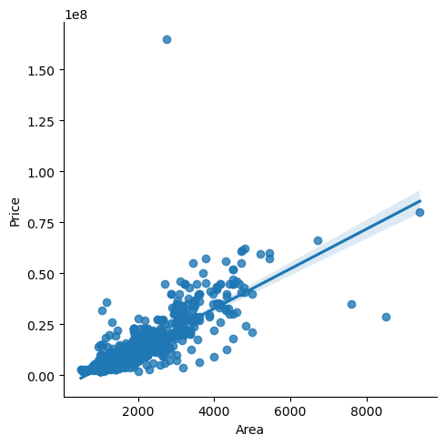
X = df[['Area']].values
y = df[['Price']].valuesfrom sklearn.preprocessing import StandardScaler
sc_x = StandardScaler()
sc_y = StandardScaler()
X_std = sc_x.fit_transform(X)
y_std = sc_y.fit_transform(y)slr = LinearRegression()
slr.fit(X_std, y_std)
print('Slope: %.3f' % slr.coef_[0])
print('Intercept: %.3f' % slr.intercept_)Slope: 0.829
Intercept: 0.000def lin_regplot(X, y, model):
plt.scatter(X, y, c='lightblue')
plt.plot(X, model.predict(X), color='red', linewidth=2)
lin_regplot(X_std, y_std, slr)
plt.xlabel('Area')
plt.ylabel('Price')
plt.tight_layout()
plt.show()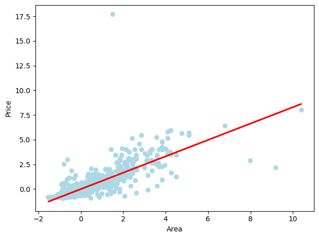
稳健回归
from sklearn.linear_model import RANSACRegressor
ransac = RANSACRegressor(LinearRegression(),
max_trials=100, # max iteration
min_samples=50, # min number of randomly chosen samples
loss='absolute_error', # absolute vertical distances to measure
residual_threshold=3, # allow sample as inlier within 5 distance units
random_state=0)
ransac.fit(X_std, y_std)
# 分出 inlier 和 outlier
inlier_mask = ransac.inlier_mask_
outlier_mask = np.logical_not(inlier_mask)
line_X = np.arange(-2, 12, 1)
line_y_ransac = ransac.predict(line_X[:, np.newaxis])
plt.scatter(X_std[inlier_mask], y_std[inlier_mask], c='blue', marker='o', label='Inliers')
plt.scatter(X_std[outlier_mask], y_std[outlier_mask], c='lightgreen', marker='s', label='Outliers')
plt.plot(line_X, line_y_ransac, color='red')
plt.xlabel('Area')
plt.ylabel('Price')
plt.legend(loc='upper left')
plt.tight_layout()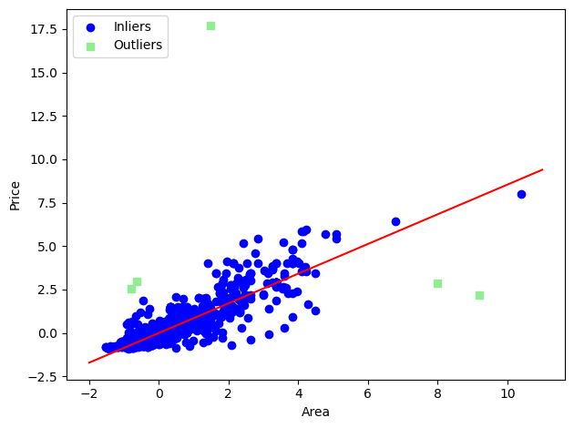
多项式回归
X = np.array([258.0, 270.0, 294.0,
320.0, 342.0, 368.0,
396.0, 446.0, 480.0, 586.0])[:, np.newaxis]
y = np.array([236.4, 234.4, 252.8,
298.6, 314.2, 342.2,
360.8, 368.0, 391.2,
390.8])# 添加二次项和截距项
from sklearn.preprocessing import PolynomialFeatures
lr = LinearRegression()
pr = LinearRegression()
quadratic = PolynomialFeatures(degree=2)
X_quad = quadratic.fit_transform(X)# fit linear features
lr.fit(X, y)
X_fit = np.arange(250,600,10)[:, np.newaxis]
y_lin_fit = lr.predict(X_fit)
# fit quadratic features
pr.fit(X_quad, y)
y_quad_fit = pr.predict(quadratic.fit_transform(X_fit))
# plot results
plt.scatter(X, y, label='training points')
plt.plot(X_fit, y_lin_fit, label='linear fit', linestyle='--')
plt.plot(X_fit, y_quad_fit, label='quadratic fit')
plt.legend(loc='upper left')
plt.tight_layout()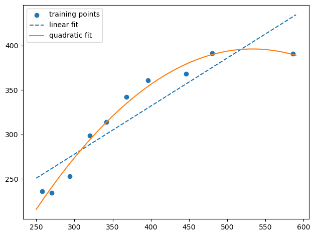
y_lin_pred = lr.predict(X)
y_quad_pred = pr.predict(X_quad)print('Training MSE linear: %.3f, quadratic: %.3f' % (
mean_squared_error(y, y_lin_pred),
mean_squared_error(y, y_quad_pred)))Training MSE linear: 569.780, quadratic: 61.330overfit和underfit问题


3. 逻辑回归算法实现
基本概念
import pandas as pd
df = pd.read_csv('../data/iris.csv')y = df.iloc[0:100, 4].values
y = np.where(y == 'Setosa', 0, 1)
# extract sepal length and petal length
X = df.iloc[0:100, [0, 2]].valuesX_std = np.copy(X)
X_std[:,0] = (X[:,0] - X[:,0].mean()) / X[:,0].std()
X_std[:,1] = (X[:,1] - X[:,1].mean()) / X[:,1].std()# use Logistic Regression
from sklearn.linear_model import LogisticRegression
lr = LogisticRegression()
lr.fit(X_std, y);w1, w2 = lr.coef_[0]
print("w1:",w1,"\n""w2:",w2)
b = lr.intercept_[0]
print("b:",b)w1: 0.673745367991571
w2: 3.2408509145918525
b: 0.4413199956841686a = -w1/w2
line_x = np.linspace(-2,2,100)
line_y = line_x*a - bplt.scatter(X_std[:50, 0], X_std[:50, 1],
color='red', marker='o', label='setosa')
plt.scatter(X_std[50:100, 0], X_std[50:100, 1],
color='blue', marker='x', label='versicolor')
plt.plot(line_x,line_y)
plt.xlabel('petal length [cm]')
plt.ylabel('sepal length [cm]')
plt.legend(loc='upper left')
plt.tight_layout()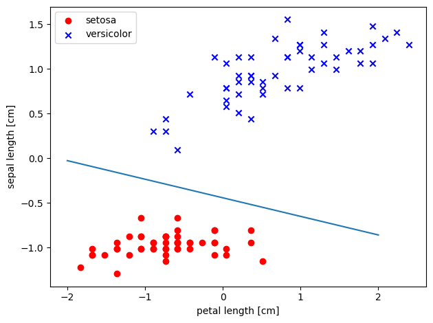
算法实现
class LogisticRegression:
def __init__(self, eta=0.01, n_iter=50): #初始类
self.eta = eta
self.n_iter = n_iter
# 训练用函数
def fit(self, X, y):
self.w_ = np.zeros(1 + X.shape[1])
self.cost_ = []
for i in range(self.n_iter):
y_val = self.activation(X)
errors = (y - y_val)
neg_grad = X.T.dot(errors) # 计算负梯度
self.w_[1:] += self.eta * neg_grad # 根据梯度修正参数
self.w_[0] += self.eta * errors.sum()
self.cost_.append(self._logit_cost(y, self.activation(X)))
return self
# 计算损失函数
def _logit_cost(self, y, y_val):
logit = -y.dot(np.log(y_val)) - ((1 - y).dot(np.log(1 - y_val)))
return logit
def _sigmoid(self, z):
return 1.0 / (1.0 + np.exp(-z))
# 计算线性组合
def net_input(self, X):
return np.dot(X, self.w_[1:]) + self.w_[0]
# 基于sigmoid对线性组合后的结果进行激活操作
def activation(self, X):
z = self.net_input(X)
return self._sigmoid(z)
def predict_proba(self, X):
return activation(X)
def predict(self, X):
return np.where(self.net_input(X) >= 0.0, 1, 0)lr = LogisticRegression(n_iter=500, eta=0.02)
lr.fit(X_std, y)
plt.plot(range(1, len(lr.cost_) + 1), np.log10(lr.cost_))
plt.xlabel('Epochs')
plt.ylabel('Cost')
plt.title('Logistic Regression - Learning rate 0.02')
plt.tight_layout()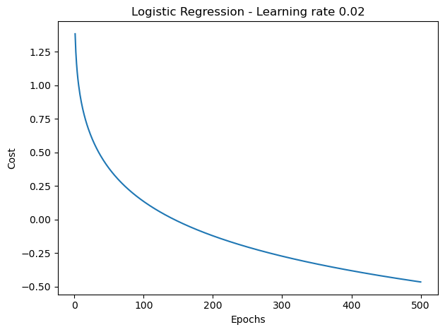
sigmoid函数
\[\displaystyle z = w_0x_0 + w_1x_1 + ... + w_mx_m = \sum_{i=0}^nw_ix_i\]
\[\displaystyle \phi (z) = \frac{1}{1+e^{-z}}\]
%matplotlib inline
import matplotlib.pyplot as plt
import numpy as np
def sigmoid(z): #定义sigmoid函数
return 1.0 / (1.0 + np.exp(-z))
# 定义了两个向量以便画图
z = np.arange(-7, 7, 0.1)
phi_z = sigmoid(z)
# 绘制出了函数曲线
plt.plot(z, phi_z)
# 如下定义了坐标线等参照以便观察
plt.axvline(0.0, color='k')
plt.ylim(-0.1, 1.1)
plt.xlabel('z')
plt.ylabel('$\phi (z)$')
plt.yticks([0.0, 0.5, 1.0])
ax = plt.gca()
ax.yaxis.grid(True)
plt.tight_layout()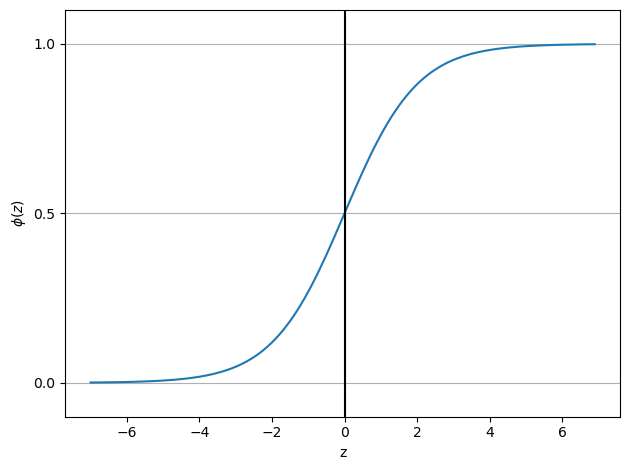
交叉熵损失函数
\[J(\mathbf{w}) = \sum_{i=1}^{m} - y^{(i)} log \bigg( \phi\big(z^{(i)}\big) \bigg) - \big(1 - y^{(i)}\big) log\bigg(1-\phi\big(z^{(i)}\big)\bigg).\]
def cost_1(z):
return - np.log(sigmoid(z))
def cost_0(z):
return - np.log(1 - sigmoid(z))
z = np.arange(-10, 10, 0.1)
phi_z = sigmoid(z)
c1 = [cost_1(x) for x in z]
plt.plot(phi_z, c1, label='LOSS if y=1')
c0 = [cost_0(x) for x in z]
plt.plot(phi_z, c0, linestyle='--', label='LOSS if y=0')
plt.ylim(0.0, 5.1)
plt.xlim([0, 1])
plt.xlabel('f(x)')
plt.ylabel('LOSS')
plt.legend(loc='best')
plt.tight_layout()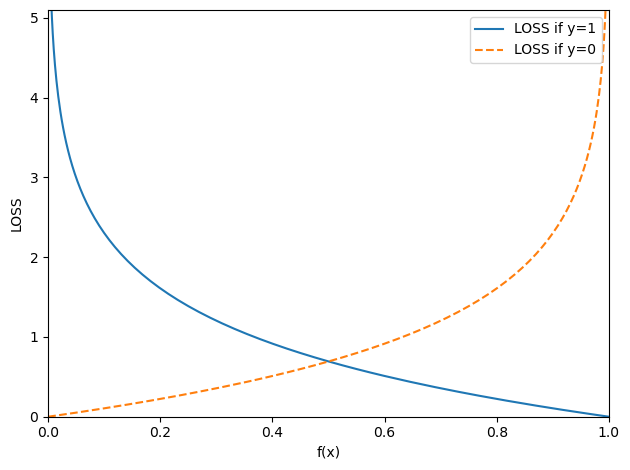
分类问题的评估方法
from sklearn.linear_model import LogisticRegression
lr = LogisticRegression()
lr.fit(X_std, y)
y_predict = lr.predict(X_std)accuracy (标签预测正确的比例)
lr.score(X_std, y)1.0from sklearn.metrics import accuracy_score
accuracy_score(y, y_predict)1.0
from sklearn.metrics import confusion_matrix
confmat = confusion_matrix(y, y_predict)
print(confmat)[[50 0]
[ 0 50]]- Precision is how many of the predictions for a class are actually that class.
- Recall is how many of the true positives were recovered:
- TPR : true positive rate
- FPR : false positive rate
\[\begin{align} &PRE = \frac{TP}{TP+FP} \\ &REC = TPR = \frac{TP}{FN+TP} \\ &FPR = \frac{FP}{FP+TN} \\ &TPR = \frac{TP}{FN+TP} \end{align}\]
from sklearn.metrics import precision_score, recall_score,
print('Precision: %.3f' % precision_score(y, y_predict))
print('Recall: %.3f' % recall_score(y, y_predict))Precision: 1.000
Recall: 1.000ROC曲线(Give Me Some Credit数据示例)
df_imputed = pd.read_csv('../data/df_imputed')df_imputed.head()| serious_dlqin2yrs | revolving_utilization_of_unsecured_lines | age | number_of_time30-59_days_past_due_not_worse | debt_ratio | monthly_income | number_of_open_credit_lines_and_loans | number_of_times90_days_late | number_real_estate_loans_or_lines | number_of_time60-89_days_past_due_not_worse | number_of_dependents | income_bins | age_bin | monthly_income_scaled | |
|---|---|---|---|---|---|---|---|---|---|---|---|---|---|---|
| 0 | 1 | 0.766127 | 45 | 2 | 0.802982 | 9120.0 | 13 | 0 | 6 | 0 | 2.0 | 9 | (40, 45] | 0.810162 |
| 1 | 0 | 0.957151 | 40 | 0 | 0.121876 | 2600.0 | 4 | 0 | 0 | 0 | 1.0 | 2 | (35, 40] | -1.001111 |
| 2 | 0 | 0.658180 | 38 | 1 | 0.085113 | 3042.0 | 2 | 1 | 0 | 0 | 0.0 | 3 | (35, 40] | -0.878322 |
| 3 | 0 | 0.233810 | 30 | 0 | 0.036050 | 3300.0 | 5 | 0 | 0 | 0 | 0.0 | 3 | (25, 30] | -0.806649 |
| 4 | 0 | 0.907239 | 49 | 1 | 0.024926 | 15000.0 | 7 | 0 | 1 | 0 | 0.0 | 14 | (45, 50] | 2.443640 |
features = [
'income_bins',
'age_bin',
'monthly_income_scaled']
y = df_imputed.serious_dlqin2yrs
X = pd.get_dummies(df_imputed[features], columns = ['income_bins', 'age_bin'])X| monthly_income_scaled | income_bins_0 | income_bins_1 | income_bins_2 | income_bins_3 | income_bins_4 | income_bins_5 | income_bins_6 | income_bins_7 | income_bins_8 | ... | age_bin_(30, 35] | age_bin_(35, 40] | age_bin_(40, 45] | age_bin_(45, 50] | age_bin_(50, 55] | age_bin_(55, 60] | age_bin_(60, 65] | age_bin_(65, 70] | age_bin_(70, 75] | age_bin_(75, 120] | |
|---|---|---|---|---|---|---|---|---|---|---|---|---|---|---|---|---|---|---|---|---|---|
| 0 | 0.810162 | 0 | 0 | 0 | 0 | 0 | 0 | 0 | 0 | 0 | ... | 0 | 0 | 1 | 0 | 0 | 0 | 0 | 0 | 0 | 0 |
| 1 | -1.001111 | 0 | 0 | 1 | 0 | 0 | 0 | 0 | 0 | 0 | ... | 0 | 1 | 0 | 0 | 0 | 0 | 0 | 0 | 0 | 0 |
| 2 | -0.878322 | 0 | 0 | 0 | 1 | 0 | 0 | 0 | 0 | 0 | ... | 0 | 1 | 0 | 0 | 0 | 0 | 0 | 0 | 0 | 0 |
| 3 | -0.806649 | 0 | 0 | 0 | 1 | 0 | 0 | 0 | 0 | 0 | ... | 0 | 0 | 0 | 0 | 0 | 0 | 0 | 0 | 0 | 0 |
| 4 | 2.443640 | 0 | 0 | 0 | 0 | 0 | 0 | 0 | 0 | 0 | ... | 0 | 0 | 0 | 1 | 0 | 0 | 0 | 0 | 0 | 0 |
| ... | ... | ... | ... | ... | ... | ... | ... | ... | ... | ... | ... | ... | ... | ... | ... | ... | ... | ... | ... | ... | ... |
| 149995 | -0.681638 | 0 | 0 | 0 | 1 | 0 | 0 | 0 | 0 | 0 | ... | 0 | 0 | 0 | 0 | 0 | 0 | 0 | 0 | 0 | 1 |
| 149996 | -0.473286 | 0 | 0 | 0 | 0 | 1 | 0 | 0 | 0 | 0 | ... | 0 | 0 | 0 | 0 | 0 | 0 | 0 | 0 | 0 | 0 |
| 149997 | -0.681638 | 0 | 0 | 0 | 1 | 0 | 0 | 0 | 0 | 0 | ... | 0 | 0 | 0 | 0 | 0 | 0 | 0 | 0 | 0 | 1 |
| 149998 | 1.054628 | 0 | 0 | 0 | 0 | 0 | 0 | 0 | 0 | 0 | ... | 0 | 0 | 0 | 1 | 0 | 0 | 0 | 0 | 0 | 0 |
| 149999 | -0.163258 | 0 | 0 | 0 | 0 | 0 | 1 | 0 | 0 | 0 | ... | 0 | 0 | 0 | 0 | 0 | 1 | 0 | 0 | 0 | 0 |
150000 rows × 28 columns
from sklearn.model_selection import train_test_split
from sklearn.metrics import roc_curve, roc_auc_score
train_X, test_X, train_y, test_y = train_test_split(X, y ,train_size=0.7,random_state=1) # Randomly generated predictions should give us a diagonal ROC curve
preds = np.random.rand(len(test_y))
fpr, tpr, thr = roc_curve(test_y, preds)
plt.plot(fpr, tpr)
plt.xlabel('FPR')
plt.ylabel('TPR')Text(0, 0.5, 'TPR')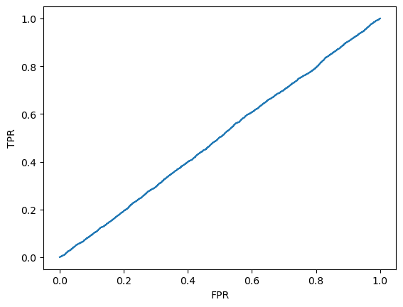
from sklearn.linear_model import LogisticRegression
clf = LogisticRegression()
clf.fit(train_X,train_y)
preds = clf.predict_proba(test_X)[:,1]
fpr, tpr, thr = roc_curve(test_y, preds)
plt.plot(fpr, tpr)
plt.xlabel('FPR')
plt.ylabel('TPR')
print(roc_auc_score(test_y, preds))0.6531727009371131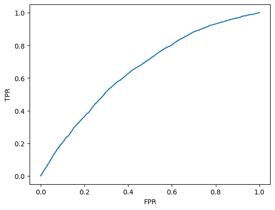
def roc_curve(true_labels, predicted_probs, n_points=100, pos_class=1):
thr = np.linspace(0,1,n_points)
tpr = np.zeros(n_points)
fpr = np.zeros(n_points)
pos = true_labels == pos_class
neg = np.logical_not(pos)
n_pos = np.count_nonzero(pos)
n_neg = np.count_nonzero(neg)
for i,t in enumerate(thr):
tpr[i] = np.count_nonzero(np.logical_and(predicted_probs >= t, pos)) / float(n_pos)
fpr[i] = np.count_nonzero(np.logical_and(predicted_probs >= t, neg)) / float(n_neg)
return fpr, tpr, thr其它变种写法
将常数项加到X中
X_std_add1 = np.concatenate([X_std,np.ones([X_std.shape[0],1])],axis = 1)class LogisticRegression:
def __init__(self, eta=0.01, n_iter=50): #初始类
self.eta = eta
self.n_iter = n_iter
# 训练用函数
def fit(self, X, y):
self.w_ = np.zeros(X.shape[1])
self.cost_ = []
for i in range(self.n_iter):
y_val = self.activation(X)
errors = (y - y_val)
neg_grad = X.T.dot(errors) # 计算负梯度
self.w_ += self.eta * neg_grad # 根据梯度修正参数
self.cost_.append(self._logit_cost(y, self.activation(X)))
return self
# 计算损失函数
def _logit_cost(self, y, y_val):
logit = -y.dot(np.log(y_val)) - ((1 - y).dot(np.log(1 - y_val)))
return logit
def _sigmoid(self, z):
return 1.0 / (1.0 + np.exp(-z))
# 计算线性组合
def net_input(self, X):
return np.dot(X, self.w_)
# 基于sigmoid对线性组合后的结果进行激活操作
def activation(self, X):
z = self.net_input(X)
return self._sigmoid(z)
def predict_proba(self, X):
return activation(X)
def predict(self, X):
return np.where(self.net_input(X) >= 0.0, 1, 0)如果数据量比较大
class LogisticRegression:
def __init__(self, eta=0.01, n_iter=50, batch_size = 32): #初始类
self.eta = eta
self.n_iter = n_iter
self.batch_size = batch_size
# 训练用函数
def fit(self, X, y):
self.w_ = np.zeros(X.shape[1])
self.cost_ = []
for i in range(self.n_iter):
sample_index = np.random.choice(X.shape[0],self.batch_size)
sample_X = X[sample_index,:]
sample_y = y[sample_index]
y_val = self.activation(sample_X)
errors = (sample_y - y_val)
neg_grad = sample_X.T.dot(errors) # 计算负梯度
self.w_ += self.eta * neg_grad # 根据梯度修正参数
self.cost_.append(self._logit_cost(sample_y, self.activation(sample_X)))
return self
# 计算损失函数
def _logit_cost(self, y, y_val):
logit = -y.dot(np.log(y_val)) - ((1 - y).dot(np.log(1 - y_val)))
return logit
def _sigmoid(self, z):
return 1.0 / (1.0 + np.exp(-z))
# 计算线性组合
def net_input(self, X):
return np.dot(X, self.w_)
# 基于sigmoid对线性组合后的结果进行激活操作
def activation(self, X):
z = self.net_input(X)
return self._sigmoid(z)
def predict_proba(self, X):
return activation(X)
def predict(self, X):
return np.where(self.net_input(X) >= 0.0, 1, 0)如果想使用正则化方法
class LogitGD:
def __init__(self, eta=0.01, lamb = 0.01, n_iter=50):
self.eta = eta
self.n_iter = n_iter
self.lamb = lamb
def fit(self, X, y):
self.w_ = np.zeros(1 + X.shape[1])
self.cost_ = []
for i in range(self.n_iter):
output = self.net_input(X)
errors = (y - output)
self.w_[1:] += self.eta * X.T.dot(errors) - self.lamb* self.w_[1:]
self.w_[0] += self.eta * errors.sum()
cost = (errors**2).sum() / 2.0 + self.lamb* np.sum(self.w_[1:]**2)
self.cost_.append(cost)
return self
def net_input(self, X):
return np.dot(X, self.w_[1:]) + self.w_[0]
def sigmoid(z):
return 1.0 / (1.0 + np.exp(-z))
def activation(self, X):
return sigmoid(self.net_input(X))
def predict(self, X):
return np.where(self.activation(X) >= 0.5, 1, -1)
4. scikit learn模块基础
Classification
Identifying which category an object belongs to.
- Applications: Spam detection, image recognition.
- Algorithms: Gradient boosting, nearest neighbors, random forest, logistic regression
Regression
Predicting a continuous-valued attribute associated with an object.
- Applications: Drug response, Stock prices.
- Algorithms: Gradient boosting, nearest neighbors, random forest, ridge
Clustering
Automatic grouping of similar objects into sets.
- Applications: Customer segmentation, Grouping experiment outcomes
- Algorithms: k-Means, HDBSCAN, hierarchical clustering
Dimensionality reduction
Reducing the number of random variables to consider.
- Applications: Visualization, Increased efficiency
- Algorithms: PCA, feature selection, non-negative matrix factorization
Model selection
Comparing, validating and choosing parameters and models.
- Applications: Improved accuracy via parameter tuning
- Algorithms: grid search, cross validation, metrics
Preprocessing
Feature extraction and normalization.
- Applications: Transforming input data such as text for use with machine learning algorithms.
- Algorithms: preprocessing, feature extraction
扩展阅读
- https://scikit-learn.org/stable/index.html